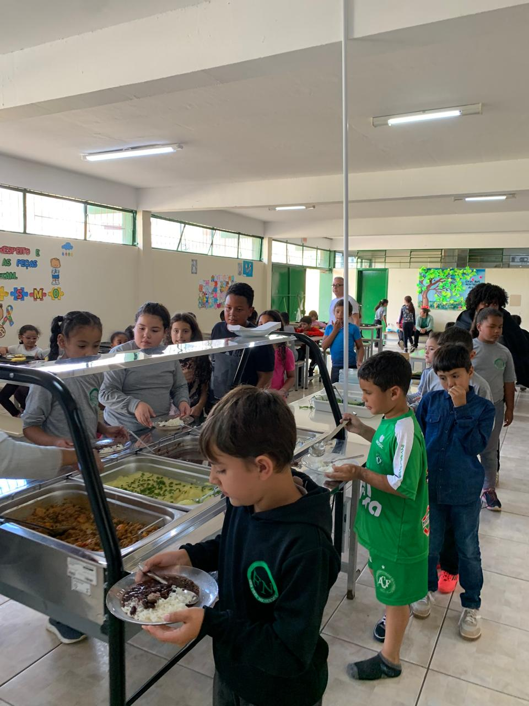
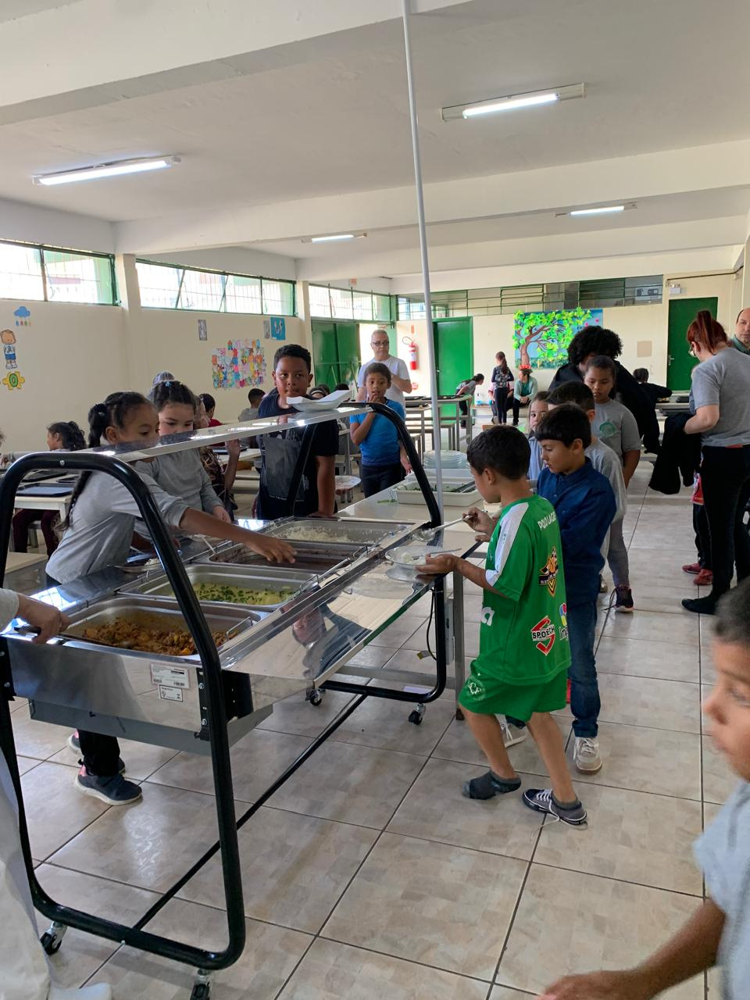
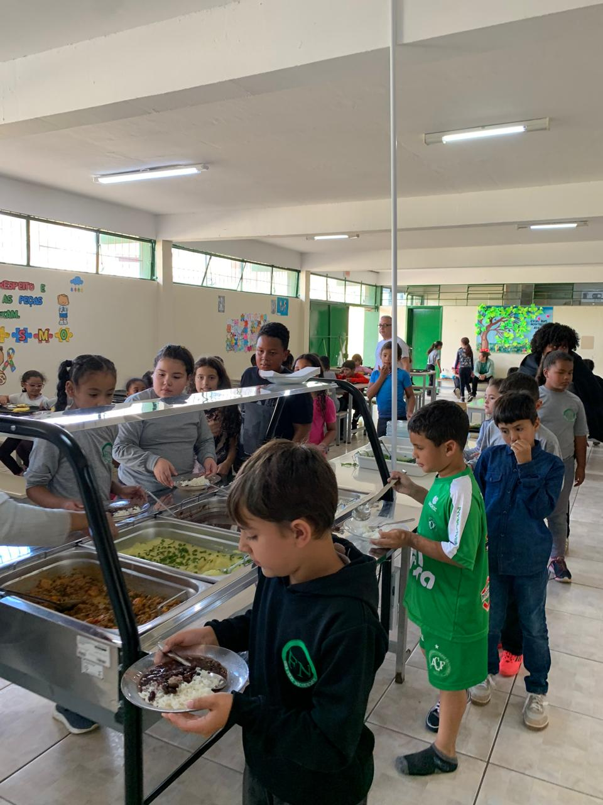
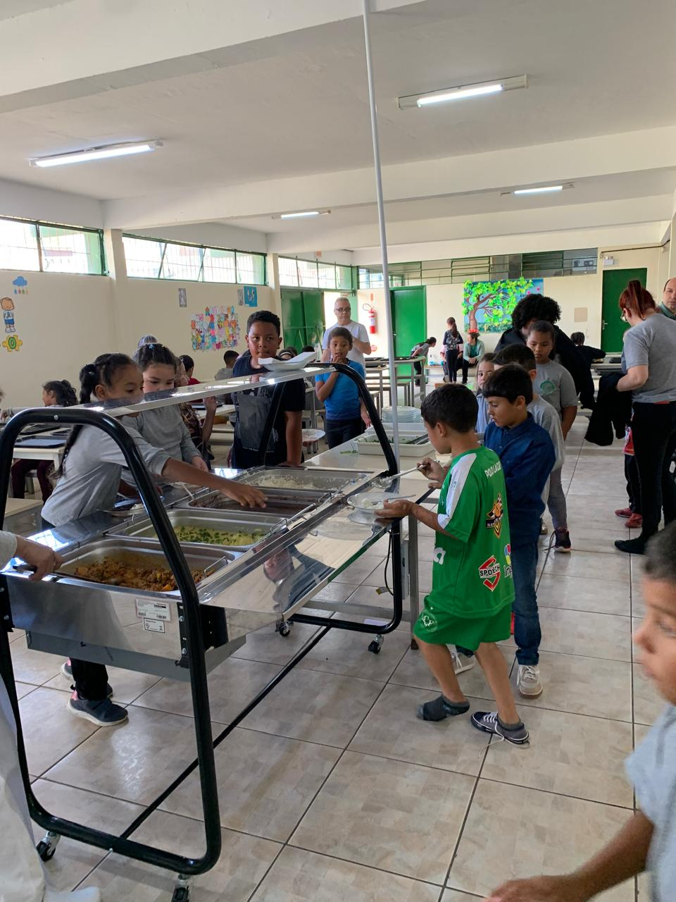

Access to all students!
The E.E.B Frei Nicodemos, located in Lages (SC), in the Petrópolis neighborhood, offers face-to-face teaching during the day and night, serving Elementary School. As a state public school, it prioritizes inclusive and accessible education, ensuring opportunities for all students.
 




Its facilities are adapted for accessibility, with handrails, ramps, wide doors and adapted bathrooms. In addition, it has a library, indoor sports court, computer lab with Internet access, digital whiteboard, various teaching materials, musical instruments, multimedia collection, sound system, as well as cultural, sports and recreational resources.
The school also has qualified professionals in various areas, including pedagogical supervision and food safety, creating a complete and sustainable educational environment for student development.
May this page help you explore this fascinating universe! We hope that the information presented here will make a difference in your knowledge and contribute to the growth of your company.